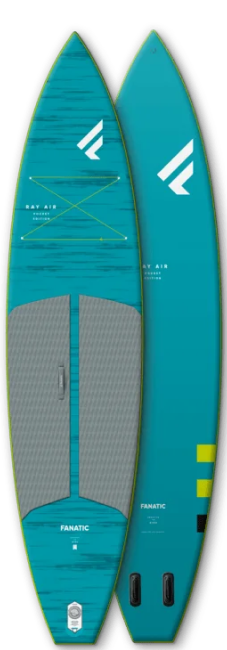

RAY AIR POCKET
INFLATABLE SUP BOARD
SIZES: 11'6"X31"
DOM
FREE
PACK SMALL FOR BIG ADVENTURES
After our well received Fly Air Pocket Edition we’re adding the respective touring iSUP to our Range – the Ray Air Pocket Edition! The ultra travel-friendly touring iSUP is built in a tough but light construction that allows it to be packed into a backpack half the size of a regular iSUP.
With a thinner deck pad and tough but flexible construction, the Ray Air Pocket Edition can be rolled and packed into a much narrower bag, making it extremely easy to store and transport. Based on our highly versatile Ray Air 11’6’’, the efficient shape is packed with volume - offering safe, stable paddling and superb glide – which makes it the perfect iSUP for everyone paddling some distance. With its minimal weight and dimensions nothing comes close the convenient handling of our Pocket Edition iSUPs!
Specs
-
BOARD
RAY AIR POCKET 11'6"X31"
-
VOLUME
299 L
-
WIDTH
31" / 78.7 CM
-
LENGTH
11'6'' / 350.5 CM
-
THICKNESS
6” / 15 CM
-
WEIGHT
8.5 KG
-
FITTINGS
2X FCS FIN SYSTEM / 2 X 4.5" CLICK FIN
-
REC. USER WEIGHT
UP TO 100 KG
-
MASTFOOT INSERT
NO